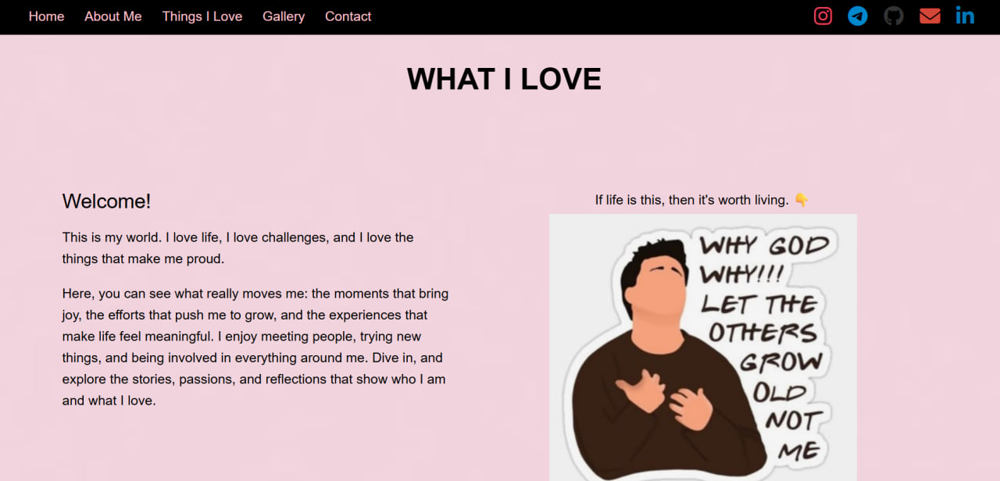

Things I Love
My first web development project. It was the project that made me believe I could actually build websites. While it was simple, it taught me the fundamentals of HTML and CSS and gave me the confidence to continue learning web development. It marks the beginning of my journey as a software engineering student.
Built my first complete webpage and gained confidence using HTML and CSS while learning page structure and styling.
HTML
CSS